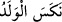

KİME UZUN ÖMÜR
VERİRSEK
68. Kime uzun ömür verirsek biz onun yaratılışını tersine çeviririz. Hiç
düşünmüyorlar mı?
69. Biz ona (Peygamber’e) şiir öğretmedik. Zaten ona yaraşmazdı da. Onun
söyledikleri, ancak Allah’tan gelmiş bir öğüt ve apaçık bir Kur’an’dır.
70. Diri olanları uyarsın ve kâfirler cezâyı hak etsinler diye.
71. Görmüyorlar mı ki, biz kudretimizin eseri olmak üzere onlar için birçok
hayvan yarattık. Bu sayede onlar bunlara sahip olmuşlardır.
72. Bu hayvanları onların emrine verdik. Onların bazısını binek olarak kullanırlar,
bazısını besin olarak yerler.
73. Bu hayvanlarda onlar için nice faydalar ve içilecek sütler vardır. Hâla
şükretmezler mi?
“Kime uzun ömür verirsek” yâni dünyada ömrünü uzatırsak “biz onun yaratılışını
tersine çeviririz.”
“ dirilik vermektir. Ömür, bedenin ruhla mâmûr olduğu müddettir.
“ tepetaklak etmektir. Bu kelime daha beliğdir, “ ise daha meşhurdur. “ bir şeyi baş aşağı etmek, ters çevirmektir. Doğumda çocuğun ayağı başından önce
çıktığı zaman “ denilir. Hastalıkta “ (nüks etmek)” kişinin iyileştikten
sonra hastalığına geri dönmesidir. Yaratılışta “ ise insanın ömrünün en kötü çağına
kadar uzatılıp götürülmesidir.
Mânâ şöyledir: Onun yaratılışını tersine çevirir, onu ilk olarak yarattığımızdaki hâline
geri döndürürüz. Bebekliğindeki gibi ürekli zayıflığı artar, kuvvetten düşer, bünyesi
bozulur, şekli ve sûreti değişir. Nihayet bedeninin zayıflığı, aklının azlığı, anlayış ve
idrakten mahrum oluşu konusunda çocuk gibi olur.